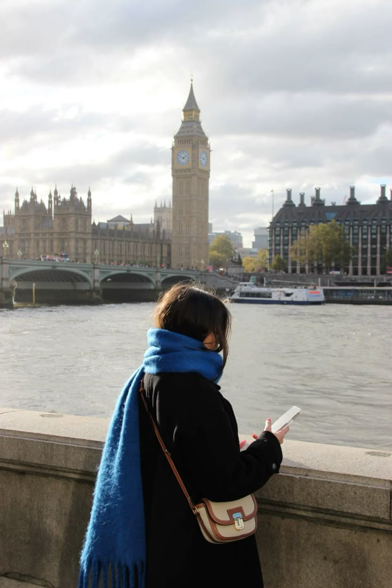

Introdução
Londres é a capital da Inglaterra e do Reino Unido, conhecida por sua rica história, cultura vibrante e monumentos icônicos como o Big Ben e o Palácio de Buckingham.
História
Fundada pelos romanos como Londinium, Londres cresceu ao longo dos séculos para se tornar uma das cidades mais influentes do mundo, desempenhando papéis importantes na política, economia e cultura global.
Pontos Turísticos Famosos
- Big Ben e Parlamento
- Palácio de Buckingham
- Torre de Londres
- London Eye
- Ponte da Torre (Tower Bridge)
Curiosidades
O metrô de Londres, conhecido como "The Tube", é o mais antigo do mundo, inaugurado em 1863. Além disso, a cidade abriga mais de 170 museus, muitos com entrada gratuita!